Introduction
Introduction to linguistics — Course Website
October 20, 2025
Outline
- Organisation: How does this course work?
- Fundamentals: What is language and how do linguists study it?
- Core concepts: How do words get their meaning?
- Linguistic domains: What are the core areas of linguistic analysis?
- Applied fields: How is linguistics used in real-world applications?
Organisation
Course materials
Course website: https://wuqui.github.io/Intro252/
Teaching approach: flipped classroom
- students prepare before class (readings, exercises);
- in-class time focuses on discussion and practice.
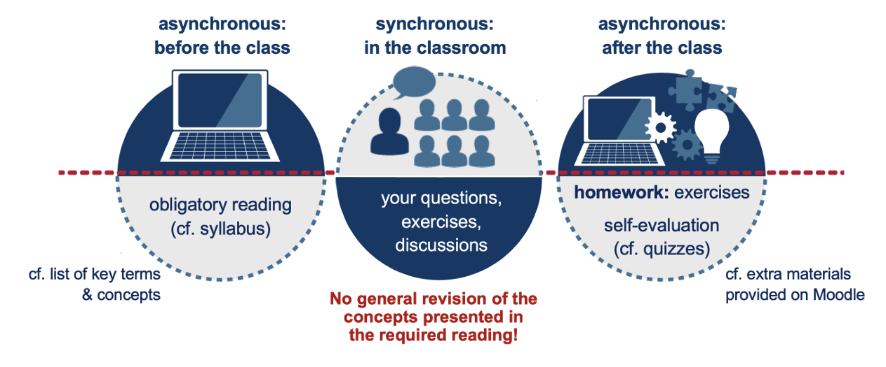
Related lectures
- Lehramt Gymnasium:
- Take ‘Grundlagenvorlesung’ Linguistik (P 3.2) alongside ‘Einführung in die Sprachwissenschaft’ (P 3.1); strongly recommended.
- Lehramt Real-/Mittel-/Grundschule (Unterrichtsfach):
- Take one ‘Grundlagenvorlesung’ (WP 3.2) alongside ‘Einführung’ (P 1.2); choose only one course labelled ‘Grundlagenvorlesung’ in WP 3.
- BA Anglistik / BA TUM / BSc WiPäd II:
- Take the ‘Grundlagenvorlesung’ in the same semester as the intro; both are assessed in one module exam.
Lectures
- Schmid: Topics in English linguistics
- Krischke: How languages work: A spotlight on English
Registration
Any open issues?
Schedule
| Date | Topic | Preparatory reading |
|---|---|---|
| 20 Oct. | Organisation & introduction | Herbst (2010): ch. 2 |
| 27 Oct. | Pragmatics | Kortmann (2020): ch. 7 |
| 3 Nov. | Phonetics | Kortmann (2020): ch. 2.1 |
| 10 Nov. | Phonology | Kortmann (2020): ch. 2.2 |
| 17 Nov. | Syntax I | Herbst (2010): ch. 11.1–11.2 |
| 24 Nov. | Syntax II | Herbst (2010): ch. 11.3–11.4 |
| 1 Dec. | Morphology | Kortmann (2020): chs. 4.1, 3.1, 3.2; Herbst (2010): ch. 8; |
| 8 Dec. | Word-formation | Kortmann (2020): ch. 3.3 |
| 15 Dec. | Semantics and lexicology | Kortmann (2020): ch. 6 |
| 22 Dec. | Revision | — |
| 12 Jan. | Sociolinguistics | Kortmann (2020): ch. 8 |
| 19 Jan. | History of English | Bieswanger and Becker (2021): ch. 2 |
| 26 Jan. | Mock exam | — |
| 2 Feb. | Exam | — |
Requirements
Literature
Selected introductions to English linguistics:
- Bieswanger, Markus & Annette Becker. 2021. Introduction to English linguistics. 5th ed. Tübingen: Narr.
- Herbst, Thomas. 2010. English linguistics: A coursebook for students of English. Berlin: De Gruyter.
- Kortmann, Bernd. 2020. English linguistics: Essentials. 2nd ed. Stuttgart: Metzler.
- Mair, Christian. 2022. English linguistics: An introduction. 4th ed. Tübingen: Narr.
- Plag, Ingo, Sabine Arndt-Lappe, Maria Braun & Mareile Schramm. 2015. Introduction to English linguistics. 3rd ed. Berlin: De Gruyter.
- Sauer, Hans & Kerstin Majewski. 2020. My first door to English linguistics: A short companion to the study of English. Tübingen: Stauffenburg.
All available as ebooks at the university library (https://www.ub.uni-muenchen.de).
Linguistic fundamentals
Language as a tool for communication
The Organon model (Bühler 1934)
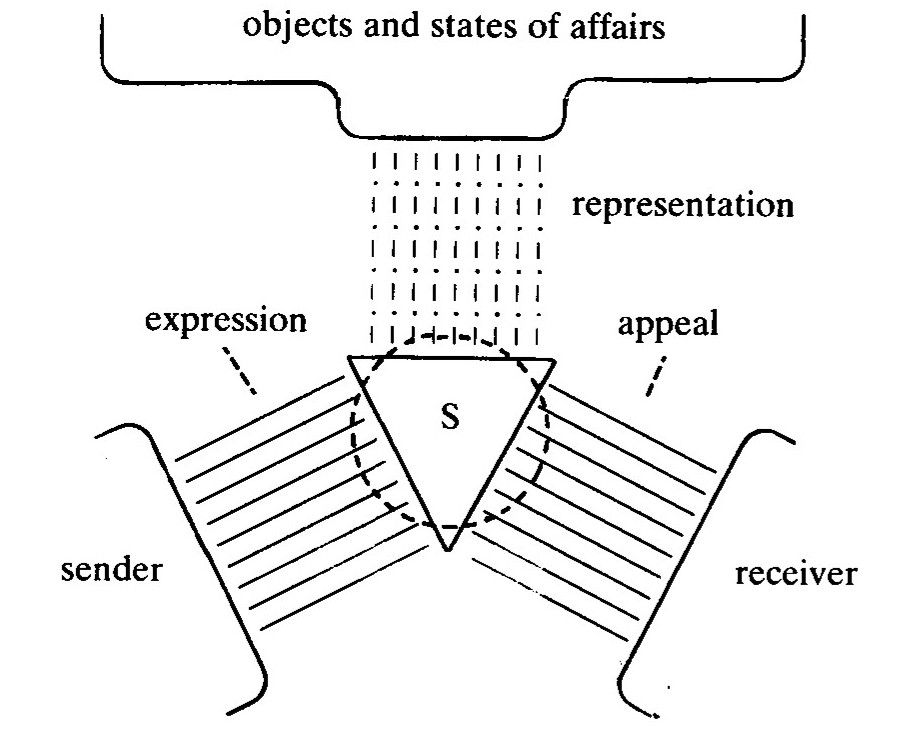
Structuralism
- The linguist who has, first and foremost, shaped linguistic thinking in the 20th century is Ferdinand de Saussure (1857–1913).
- We know about his theory of language from a set of lecture notes from a lecture delivered at Geneva university, which were published by his students as Cours de linguistique générale in 1916.
(cf. Kortmann (2020), 5–9)
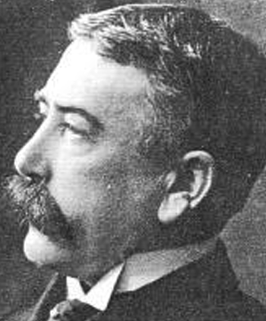
The model of the linguistic sign (Saussure 1916)
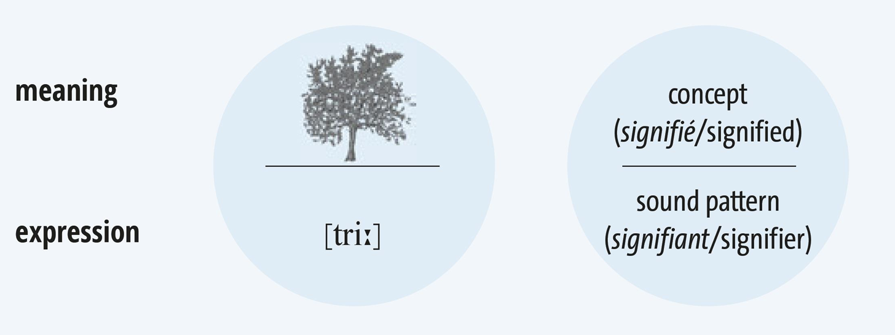
Bieswanger and Becker (2021): 6
De Saussure’s concept of the linguistic sign
The linguistic sign has the following set of characteristics:
- Reciprocity
- The signifier/signifiant evokes the signified/signifié, and vice versa.
- Arbitrariness
- This relationship is unmotivated. There is no obvious reason why a particular signifier should represent a certain signified.
- Conventionality
- This relationship between signifier and signified is based upon an implicit ‘agreement’ between speakers of speech communities.
Different types of signs: Peirce
Three major types of signs depending on the relationship between signifier and signified:
- symbol
- arbitrariness: lack of motivated link (cf. de Saussure’s linguistic sign)
- icon
- similarity: visual, acoustic, … (e.g., meow for the cat)
- index
- effect–cause or contiguity (i.e., proximity in space/time) (e.g., smoke as a sign of fire)
Exercise: symbols, icons, indices
Classify each sign and state the underlying relationship (arbitrariness, similarity, contiguity).
| Item | Sign | Relationship |
|---|---|---|
| 1. traffic light colours | symbol | arbitrariness (convention) |
| 2. portrait photo | icon | similarity (visual) |
| 3. tree rings for a tree’s age | index | contiguity (systematic correlation) |
| 4. onomatopoeia of the word click | icon | similarity (acoustic) |
| 5. national flag of Japan for the country | symbol | arbitrariness (convention) |
| 6. wet footprints on the floor | index | contiguity (proximity in space/time) |
Paradigmatic vs syntagmatic relations
Linguistic units (in phonology, word-formation, syntax etc.) stand in two types of relationships:
- Elements which co-occur in horizontal order form syntagms or “chain relationships”.
- Elements which replace each other in the same functional slot form paradigms or “choice relationships”.
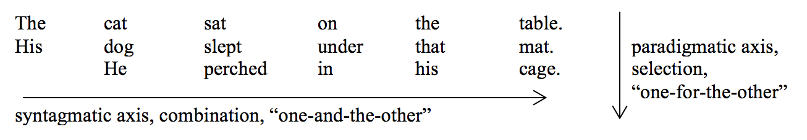
Linearity of language
Language is linear: Saussure’s signifier unfolds in time along the syntagmatic chain.
- In chat, the platform serialises turns with timestamps; order itself creates meaning.
- Simultaneous cues (emoji, read receipts, voice notes) are anchored to points on the chain; the app linearises them.
- Interpretation is path‑dependent: earlier items license later ones (anaphora, ellipsis).
- Therefore, where spoken or written, language is always linear in the end.
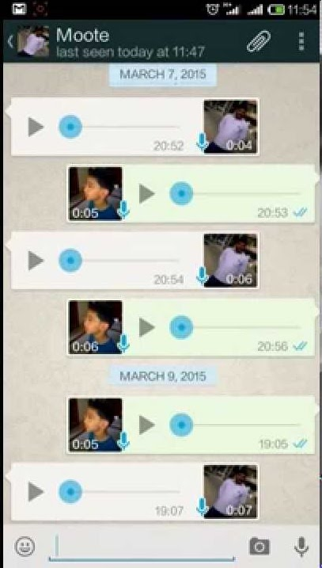
Aim of structuralism and emancipation from de Saussure
Aim of Structuralism: Identifying and describing elements in the system (on all levels of a language: sounds, words and their components, sentences and their constituents) in terms of their paradigmatic and syntagmatic relationships to other elements in the system.
Since the 1960s …
- renewed interest in language variation and change (vs primacy of synchrony)
- research into language use by individual speakers in different social situations → pragmatics & sociolinguistics (vs primacy of the system)
- recognition of fuzzy boundaries/continua and acceptance of dichotomies only as pedagogically useful idealisations (e.g., synchrony – diachrony, language system – language use, vocabulary – grammar, written language – spoken language)
Synchrony vs diachrony
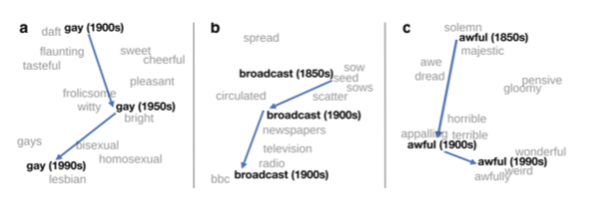
Change of meaning over time (Hamilton, Leskovec, and Jurafsky 2016)
- Synchrony:
- study of the language system at a single time point; internal relations among elements.
- Diachrony:
- study of change over time; how forms and meanings evolve.
Langue and parole
- Langue:
- rules of the game
- abstract linguistic system shared by a speech community; grammar and lexicon independent of individual use
- Parole:
- how the game is actually played
- concrete, individual language use in context; actual utterances with performance variation
Descriptivism vs prescriptivism
- Descriptivism
- describes how speakers actually use language without judging forms as right or wrong.
- e.g. accepting double negatives in some dialects as systematic grammar.
- Prescriptivism
- sets rules for how people ought to use language, often based on tradition or style.
- e.g. forbidding sentence‑final prepositions in formal writing.
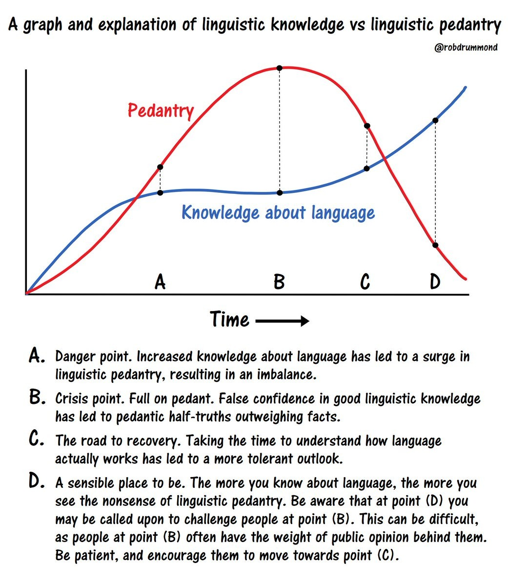
Object language vs metalanguage
Definitions
- Object language
- language used as the subject of description or analysis (the examples themselves).
- Metalanguage
- language used to talk about language (terms, rules, and descriptions).
Examples
- Saying shit is not allowed.
- verb is a noun.
- I don’t know the word for word in Spanish.
Exercise
- The meaning of bank is ambiguous.
- Noun phrases often start with the words the or a.
- Morphology is the field of language which studies the formation of new words.
- The past tense of verbs is formed by adding the suffix -ed.
- The meaning of bank is ambiguous.
- Noun phrases often start with the words the or a.
- Morphology is the field of language which studies the formation of new words.
- The past tense of verbs is formed by adding the suffix -ed.
Recap — Fundamentals
- What are the key characteristics of the linguistic sign according to de Saussure?
- What is the difference between syntagmatic and paradigmatic relations?
- What is the difference between synchrony and diachrony?
Quiz
- What does “arbitrary” mean in Saussure’s sign?
- random noise;
- no natural link between form and meaning;
- unpredictable usage
- Which substitution best illustrates a paradigmatic relation?
- Replacing student with teacher in “The ___ reads the book”
- Adding quickly after reads
- Moving the to the end of the sentence
- Replacing student with teacher in “The ___ reads the book”
- Which of the following is an index?
- The word tree
- A photograph of a cat
- Smoke signalling fire
- The word tree
Linguistic domains
Overview
language as structure: phonetics, phonology, morphology, semantics, syntax, text linguistics
language as a cultural and social phenomenon: contact linguistics, historical linguistics, dialectology, pragmatics, sociolinguistics
language as a biological phenomenon: neurolinguistics, psycholinguistics, cognitive linguistics
practical applications: second language acquisition/teaching, compiling dictionaries, translation theory, computer linguistics, artificial intelligence research, forensic linguistics
…
Core domains
- phonetics and phonology
- morphology and word-formation
- syntax
- semantics
- pragmatics
- sociolinguistics
- historical linguistics
- …
Phonetics and phonology
Our Strange Lingo (Lord Cromer)
When the English tongue we speak.
Why is break not rhymed with freak?
Will you tell me why it’s true
We say sew but likewise few?
And the maker of the verse,
Cannot rhyme his horse with worse?
Beard is not the same as heard
Cord is different from word.
Cow is cow but low is low
Shoe is never rhymed with foe.
Think of hose, dose, and lose
And think of goose and yet with choose
Think of comb, tomb and bomb,
Doll and roll or home and some.
Since pay is rhymed with say
Why not paid with said I pray?
Think of blood, food and good.
Mould is not pronounced like could.
Wherefore done, but gone and lone -
Is there any reason known?
To sum up all, it seems to me
Sound and letters don’t agree.
Phonetics and phonology
What do you hear?
Test
Analysis
Morphology and word-formation
Analysing complex words
- How many parts does the word disclaimers consist of?
- How can we analyse this complex word in terms of its parts?
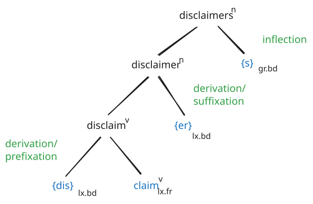
Why and how do we form new words?
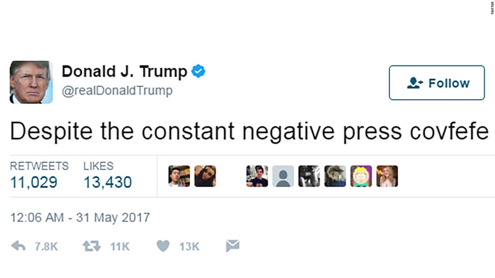
Syntax
What’s the problem with the following sentence?
The old man the boat.
The sentence is ungrammatical:
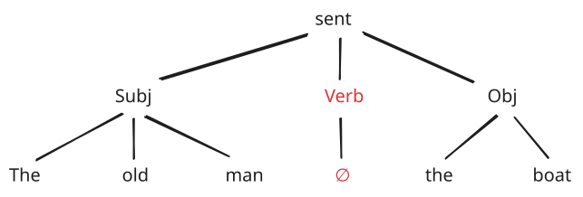
The sentence is grammatical:
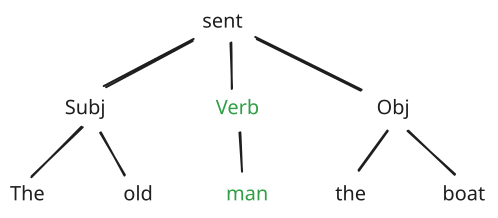
Applied fields
Overview
- lexicography
- language acquisition and learning (teaching)
- cognitive linguistics and psycholinguistics
- computational linguistics
- forensic linguistics
- …
Lexicography
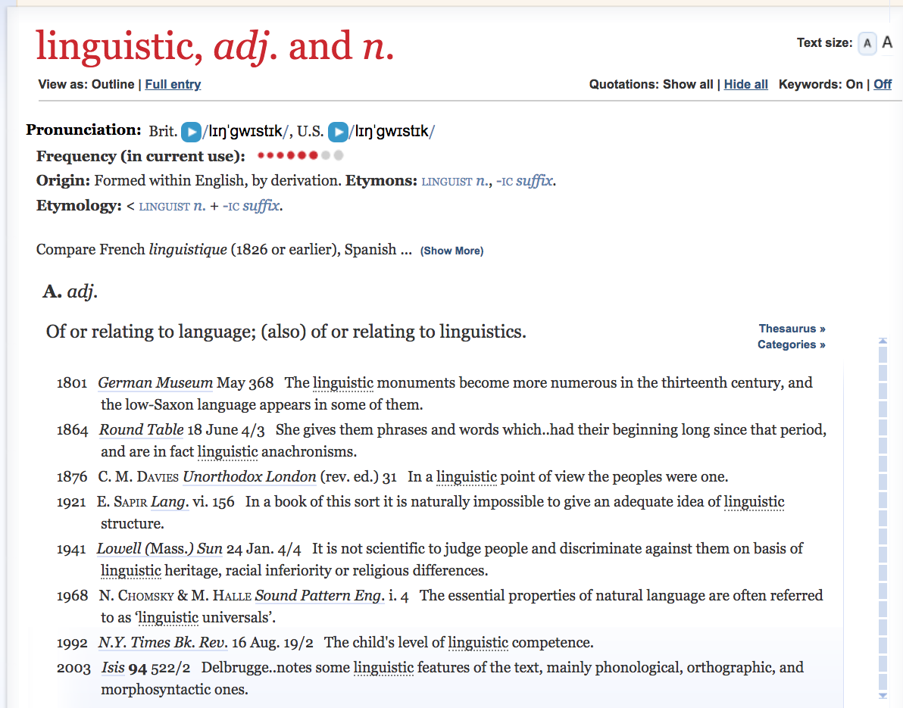
The Oxford English Dictionary (OED)
Cognitive linguistics and psycholinguistics
The Stroop test foo
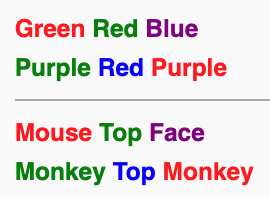
Computational linguistics

Hubs of lexical innovation (Grieve, Nini, and Guo 2018)
Summary and outlook
Key points
- Structuralism foregrounds synchrony and the linguistic system.
- Linguistic signs are reciprocal, arbitrary, and conventional.
- Relations: syntagmatic (chain) vs paradigmatic (choice).
- Peirce’s triad: symbol (arbitrariness), icon (similarity), index (contiguity).
- Linguistics spans core domains and applied fields; methods and examples matter.
Next week: Pragmatics
Read Kortmann (2020): ch. 7